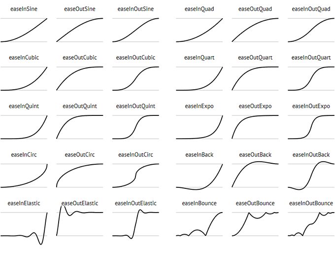

Переход является простой анимацией от одного набора CSS-свойств к другому через определенный промежуток времени. Работает это так, что отдельные свойства анимируются от начального состояния до конечного.
Имейте в виду, что переход представляет собой специфический вид анимации, где есть только начальное и конечное состояние.
Чтобы переход заработал, нужно следующее.
Два стиля. Один стиль должен представлять начальный вид элемента, например красную кнопку перехода, а второй - его конечный вид: синюю кнопку перехода. О процессе анимации изменения между двумя состояниями позаботится веб-браузер (например, об изменении цвета кнопки с красного на синий).
Свойство transition. В CSS3 добавляется свойство transition - позволяющее осуществить анимацию. Обычно свойство transition применяется к исходному стилю, который определяет внешний вид элемента до начала анимации.
Инициатор. Инициатор представляет собой действие, вызывающее изменение от одного стиля к другому. В CSS для запуска анимации можно использовать несколько псевдоклассов. Наиболее часто применяется псевдокласс :hover. С его помощью можно анимировать изменение, происходящее от обычного появления элемента и до его внешнего вида, который появляется, когда посетитель проводит над ним указатель мыши.
Самый простой способ задать стили для различных состояний - это воспользоваться псевдоклассами :hover, :focus, :active и :target
Смена свойств происходит при наступлении определенного события, которое описывается соответствующим псевдоклассом. Чаще всего используется псевдокласс :hover. Данный псевдокласс не работает на мобильных устройствах, таких как iPhone или Android. Универсальным решением, работающим в настольных и мобильных браузерах, будет обработка событий с помощью JavaScript (например, переключение классов при клике).
Кроме того, для динамической смены стиля любого тега можно воспользоваться JavaScript.
Когда инициатор больше не применяется, то есть когда, например, посетитель убирает указатель мыши с кнопки навигации, браузер возвращает тег обратно к его прежнему стилю и анимирует весь этот процесс. Иными словами, вам нужно лишь установить переход для элемента один раз, а анимацию от одного стиля к другому и обратно к исходному стилю браузер возьмет на себя.
Переходы применяются ко всем элементам, а также к псевдоэлементам :before и :after. Для задания всех свойств перехода обычно используют краткую запись свойства transition.
CSS3 переходы могут применяться не ко всем свойствам и их значениям. Подробный перечень вы найдёте на этой странице и на этой странице.
transition-property
Содержит название CSS-свойств, к которым будет применен эффект перехода. Значение свойства может содержать как одно свойство, так и список свойств через запятую. При создании перехода можно использовать как начальное, так и конечное состояние элемента. Свойство не наследуется.
background-color: #000;
border-radius: 10px;
transition-property: background-color;
/* Так же разрещается следующая запись */transition-property: all;
transition-property: background-color, border-radius;
all - значение по умолчанию. Применяет эффект перехода ко всем свойствам элемента.
Как Вы можете увидеть плавного перехода нет. Нам поможет в этом....
transition-duration
Задаёт промежуток времени, в течение которого должен осуществляться переход.Если продолжительность перехода не указана, то анимация при смене значений свойств происходить не будет. Свойство не наследуется.
Чтобы указать продолжительность анимации, используется свойство transition-duration. Ему передается или значение в секундах, или значение в миллисекундах (тысячных долях секунды).
Так же можно указать отдельную продолжительность для каждого анимируемого свойства. Например, когда посетитель проводит указатель мыши над кнопкой, может потребоваться, чтобы цвет текста изменялся быстрее, цвет фона изменялся немного медленнее, а цвет границы изменялся заметно медленнее. Для этого нужно перечислить анимируемые свойства, используя свойство transition-property, а затем перечислить показатели продолжительности с помощью свойства transition-duration.
background-color: #000;
border-radius: 10px;
transition-property: background-color;
transition-duration: .8s;
/* Так же разрещается следующая запись */transition-property: background-color, border-radius;
transition-duration: .8s, 950ms;
Порядок перечисления показателей продолжительности должен соответствовать порядку перечисления свойств.
Чтобы анимированный переход заработал, нужно только установить значения для свойств transition-property и transition-duration. Но с помощью свойства transition-timing-function можно также контролировать и скорость хода анимации.
Свойство задаёт временную функцию, которая описывает скорость перехода объекта от одного значения к другому. Если вы определяете более одного перехода для элемент, например, цвет фона элемента и его положение, вы можете использовать разные функции для каждого свойства. Свойство не наследуется.
В предназначении этого свойства нетрудно и запутаться: оно управляет не продолжительностью анимации (для этого есть свойство transition-duration), а скоростью хода анимации. Например, можно начать анимацию медленно, а затем быстро ее завершить, создавая эффект незаметного в начале и быстрого в конце изменения фонового цвета.
Свойство transition-timing-function может получать в качестве занчения ключевые слова:
linear - Переход происходит равномерно на протяжении всего времени, без колебаний в скорости.
ease - Функция по умолчанию, переход начинается медленно, разгоняется быстро и замедляется в конце.
ease-in - Переход начинается медленно, а затем плавно ускоряется в конце.
ease-out - Переход начинается быстро и плавно замедляется в конце.
ease-in-out - Переход медленно начинается и медленно заканчивается.
cubic-bezier(x1, y1, x2, y2) - Позволяет вручную установить значения от 0 до 1 для кривой ускорения. На этом сайте вы сможете построить любую траекторию перехода.
Для создания более реалистичных анимаций используйте функцию cubic-bezier

Пользовательские функции CUBIC BÉZIER с сайта EASINGS.NET
Функция Безье cubic-bezier(0.390, -0.440, 0.695, 1.650)
transition-delay
Можно задержать время начала анимации перехода, воспользовавшись свойством transition-delay, т. е. как долго переход должен ждать, прежде чем начнётся на самом деле.
Необязательное свойство. Не наследуется.
Как и с transition-duration вы можете использовать секунды (s) или миллисекунды (ms).
Как и в случае применения свойства transition-duration, для каждого свойства можно указать свое время задержки. Порядок перечисления показателей времени должен соответствовать порядку перечисления этих свойств для transition-property.
10%
20%
30%
40%
50%
60%
70%
80%
90%
100%
Краткая запись свойства transition
Запись всех свойств по отдельности - transition-property, transition-duration, transition-timing-function - может просто утомить. По этому, все свойства, отвечающие за изменение внешнего вида элемента, можно объединить в одно свойство transition
Это свойство связывает все другие свойства в одно. Нужно просто перечислить через запятую свойство, продолжительность, функцию распределения скорости по времени и задержку.
Если воспользоваться значениями по умолчанию, то запись
transition: 1s;
будет эквивалентна
transition: all 1s ease 0s;
Желательно чтобы список состоял из ключевого слова all или какого-нибудь одного CSS-свойства, а также из продолжительности, а функцию распределения скорости по времени и задержку можно не указывать. По умолчанию в качестве функции распределения задается ease-in, а задержка не используется. То есть, если нужно просто анимировать переход всех CSS-свойств на 1 секунду, нужно написать следующий код:
transition: all 1s;
Если нужно анимировать сразу несколько CSS-свойств (но не все), можно воспользоваться их списком с запятой в качестве разделителя, где элементами будут являться разделенные пробелами свойства переходов.
transition: color 1s, background-color 1s, border-color .5s 1s;